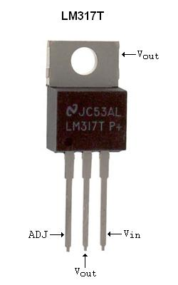
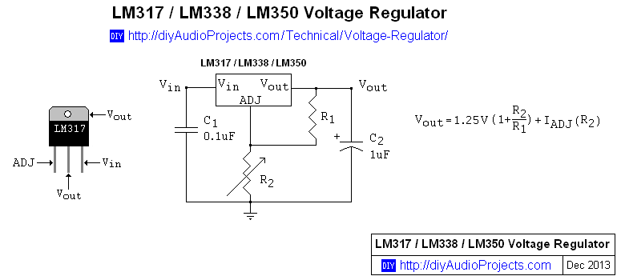
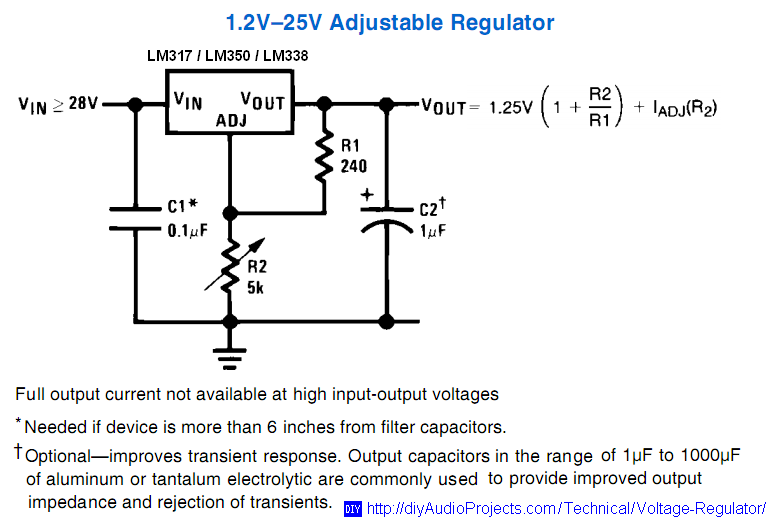
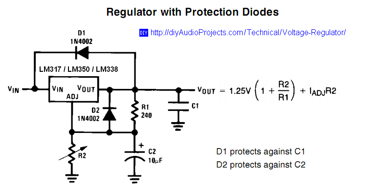
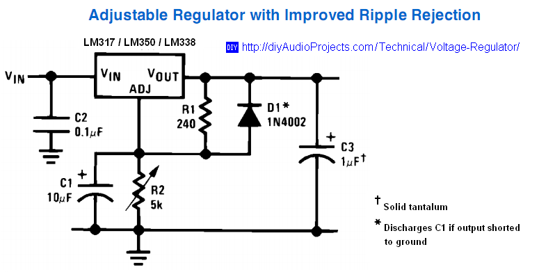
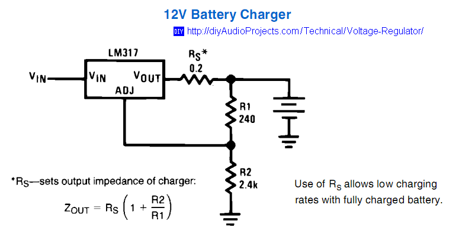

LM317 / LM338 / LM350 Voltage Regulator Calculator
LM317 / LM338 / LM350 Voltage Regulators
The LM317 / LM338 / LM350 family of adjustable 3-terminal positive voltage regulators can take a input of 3 to 40 Volts DC and provide a regulated voltage over a 1.2V to 37V output range. The LM317 voltage regulators can provide up to 1.5 Amperes (A) of output current. Where greater output current is required, the LM350 series regulators are suitable up to 3A and the LM338 series voltage regulators for up to 5A of output.
The LM317 / LM338 / LM350 voltage regulators are exceptionally easy to use, requiring only two external resistors to set the regulated output voltage. You can expect performance of both the line and load regulation using the LM317 / LM338 / LM350 adjustable voltage regulators over that of standard fixed voltage regulator. The LM317 / LM338 / LM350 voltage regulators offer full overload protection. Normally, no capacitors are needed unless the device is situated more than 150 mm (6 inches) from the input filter capacitors in which case an input bypass capacitor is required. An optional output capacitor can be added to improve transient response. The adjustment terminal of the regulator can be bypassed to achieve very high ripple rejection. Refer to the adjustable regulator data sheets below for more information about the LM317 / LM338 / LM350 adjustable voltage regulators.

Photograph 1: LM317 Voltage Regulator (TO-220 Plastic Package)
LM317 / LM338 / LM350 Voltage Regulator Calculator
You can use this Voltage Regulator Calculator to vary the value of the program resistor (R1) and output set resistor (R2) and calculate the output voltage for the LM317 / LM338 / LM350 family of three terminal adjustable voltage regulators. This Voltage Regulator Calculator will work for all voltage regulators with a reference voltage (VREF) of 1.25. Typically, the program resistor (R1) is set at 240 ohms for the LM117, LM317, LM138 and LM150 regulators. For the LM338 and LM350 regulators, 120 ohms is typically used for the program resistor R1. However, other values such as 150 or 220 ohms can also be used for R1. The LM317 / LM338 / LM350 series of voltage regulators can also be configured to regulate current in a circuit. For information about current regulation with these integrated circuit (IC) regulators see the LM317 / LM338 / LM350 Current Regulator Calculator.

Figure 1: LM317 / LM338 / LM350 Voltage Regulator Calculator Schematic
LM317 / LM338 / LM350 Voltage Regulator Calculator
To determine the output voltage, enter values for the program (R1) and set (R2) resistors and hit the "Calculate" button.
NOTE: this online voltage regulator calculator requires that JavaScript be enabled on your browser.
LM317 / LM338 / LM350 Voltage Regulator Calculator
UPDATE - the LM317 / LM338 / LM350 current regulator calculator has been moved to it's own page, LM317 / LM338 / LM350 Current Regulator Calculator. Please update your bookmarks.
Datasheets - LM317 / LM338 / LM350 3-Terminal Adjustable Regulator
- LM117 / LM317A / LM317 Adjustable Regulator Datasheet - (PDF 1MB) - March 2010 - National Semiconductor
- LM138 / LM338 5 Amp 3-Terminal Adjustable Regulator Datasheet - (PDF 400kB) - May 1998 - National Semiconductor
- LM150 / LM350 3 Amp 3-Terminal Adjustable Regulator Datasheet - (PDF 400kB) - May 1998 - National Semiconductor
LM317 / LM338 / LM350 Voltage Regulator Circuits
The following schematics show typical circuit applications for the LM317 / LM338 / LM350 voltage regulators. Note: The dropout voltage of the IC regulator is about 1.5 to 2.5 Volts, dependent on the output current (IOUT). Therefore, the input voltage to the LM317 / LM338 / LM350 regulator will need to be at least 1.5V to 2.5V greater than the desired output voltage. Plan to be about 3V about the desired output voltage. You don't want to use too high an input voltage as the excess will need to be dissipated as heat through the regulator. See the voltage regulator datasheets above for specific details regarding the dropout voltage and heatsink requirements.

Figure 2: 1.2 to 25V Adjustable Voltage Regulator Schematic for LM317 / LM338 / LM350
When external capacitors are used with a voltage regulator it may be necessary to use protection diodes to prevent the capacitors from discharging through low current points into the voltage regulator. Even small capacitors can have a low enough internal series resistance to be able to deliver 20A spikes when shorted. Although the surge is very short in duration, there is enough energy to damage parts of the regulator IC. No protection diodes are required for output voltages of less than 25V or greater than 10 uF capacitance. Figure 3 shows the LM317 / LM338 / LM350 with protection diodes included for use with voltage outputs greater than 25V and high values of output capacitance.

Figure 3: LM317 / LM338 / LM350 Voltage Regulator Schematic with Protection Diodes
Solid tantalum capacitors can be used on the voltage output to improve the ripple rejection of the voltage regulator.

Figure 4: LM317 / LM338 / LM350 Adjustable Voltage Regulator Schematic with Improved Ripple Rejection

Figure 5: 12 Volt Battery Charger Circuit with LM317 regulator
Video Tutorial - LM317 Adjustable Voltage Regulator
LM317 Adjustable Voltage Regulator Tutorial - Uploaded by Afrotechmods on Apr 17, 2011 (YouTube) - 4 minutes, 8 seconds.
LM317 Adjustable Voltage Regulator Tutorial
Voltage and Current Regulator Links
- LM317 / LM338 / LM350 Current Regulator Calculator
- Simple Low Resistance Test Jig with LM317 - [external link]
- The Care and Feeding of LM317 and LR8 Integrated Circuit Regulators, Particularly in Valve Circuits